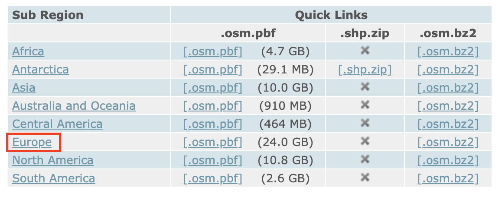
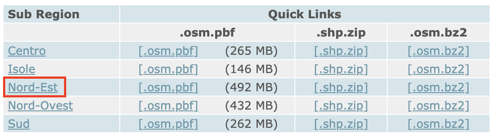
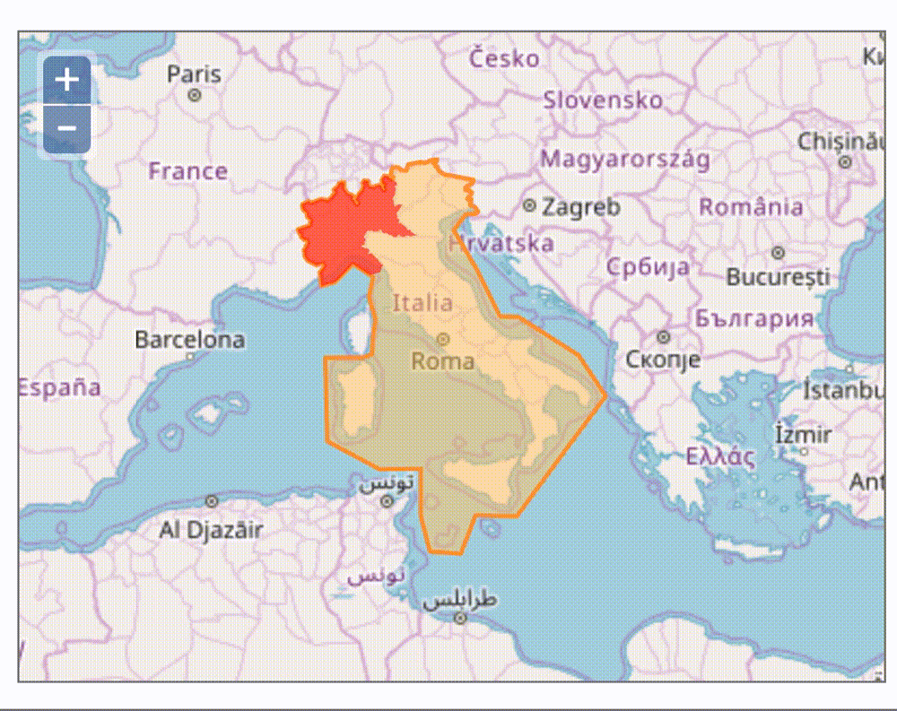

Extract OpenStreetMap Layers
In this tutorial, you will learn how to extract waterways, buildings, transport, places, and land use data from OpenStreetMap.
As a GIS user, you may encounter scenarios where data about a place’s built and natural environment is challenging to find.
Depending on the administrative resources of the place you are studying, GIS data may be more or less available for that place.
OpenStreetMap (OSM) can sometimes be a solution to that problem – with some important caveats.
This tutorial will explain:
- What OpenStreetMap data is
- When you should and shouldn’t use it
- How to go about downloading the data
What is OpenStreetMap?

OpenStreetMap (OSM) is a mapping tool powered by crowd-contributed data. You can think of OSM as the Wikipedia of GIS mapping – you can usually find decent geospatial information about most locations here, but should bring the same level of healthy skepticism you would approach a Wikipedia article with.
OpenStreetMap allows users all over the world to add or edit data features about a place. You can also download this information, and use it in any spatial software which supports common GIS file formats (shapefiles, geoJSON, etc.).
Using OSM data extracts can be a great way to find data about the roads, rivers, trails, buildings, and other features of a place, when you are having a hard time finding official datasets created and published by administrative managers of that place.
When is it appropriate to use OpenStreetMap data?
Because the data is crowd-contributed, if you are doing serious research and it is absolutely integral to your project to have verifiable data sources, replete with sound data collection methodology, you should not use OpenStreetMap data.
Alternatively, if you are looking for some quick baselayers to get your project started, or to get a rough visual sense of a place, extracting data from OpenStreetLayers is a great option.
Step-by-step guide to downloading OSM data
-
Visit GeoFabrik , a tool providing OSM data which is updated on a daily basis.
Remember, this data is crowd-contributed, so it changes every day.
-
Select the appropriate
sub-region.For this particular example, we are searching for data for Venice, Italy, so we will select
Europe.

-
Select the additional
sub-region.Venice is in the Northeast of Italy, so we will select
Nord-Est.

Tip
If you hover over the available sub-regions, the map will preview the extract extent.

-
To use this data in a typical desktop GIS environment such as
ArcGIS ProorQGIS, select the.shp.zipquick link. This will download the data to your computer.The data comes downloaded in multiple layers, each representing a different kind of data. For instance, you will find:
- waterways
- transport
- places
- land use
- buildings
Each of these layers is available as a shapefile you can use in the GIS software.
Also included in the download is a README file, which links out to documentation. In the documentation, you can read the data attributes and understand how to interpret the data.
The documentation is availble as a PDF, OpenStreetMap Data in Layered GIS Data Format .